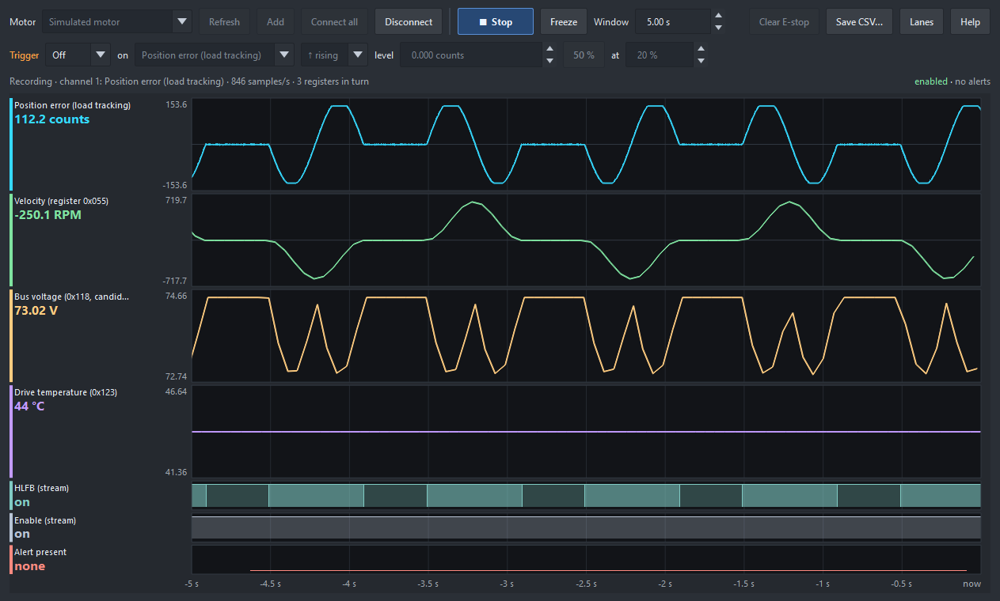
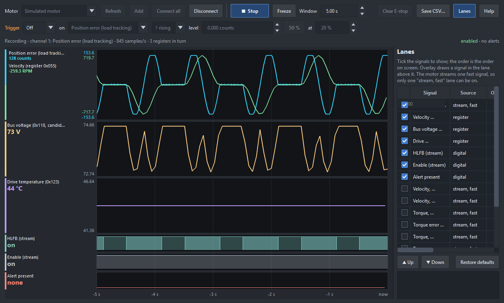
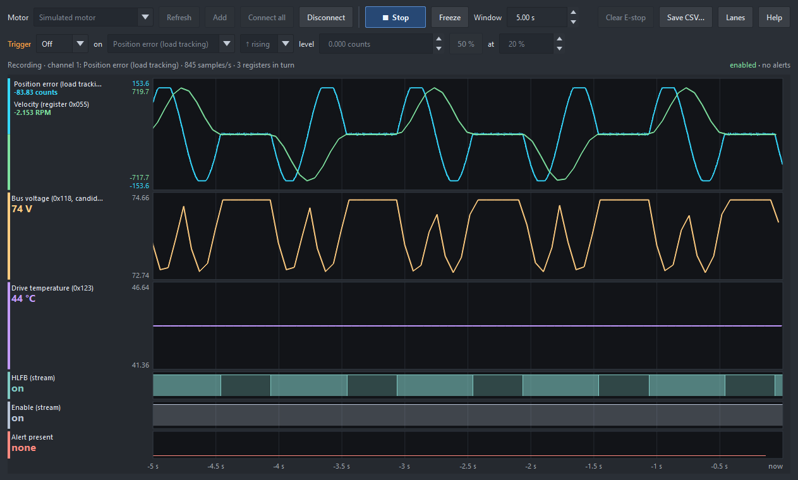
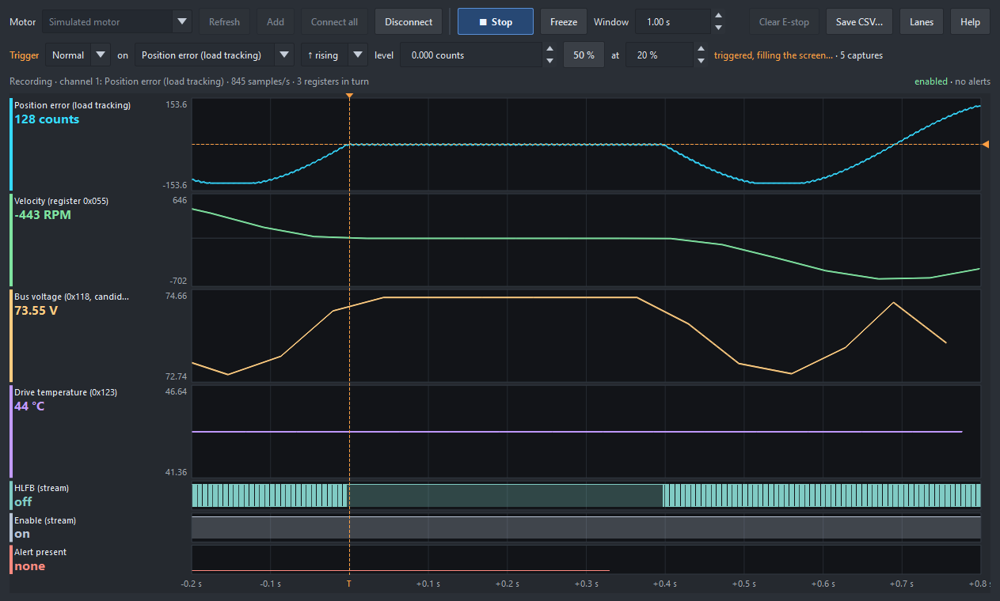

Plotter › ClearPath scope… (Ctrl+Shift+O) records a ClearPath MC/SD through the motor's own USB port (the port ClearPath-MSP uses) and shows its signals stacked on one time axis: what the X and Y servos actually do while the plotter draws. It does not use the ClearCore, so it runs during a plot.

The default lanes, the critical concerns: tracking error, velocity, bus voltage, drive temperature, HLFB, enable and alerts.
With more than one motor on USB, the list shows each by its COM port. Connecting shows the drive's serial number, so you can tell which motor it is.
Up to four motors record together on one time axis, each through its own USB port. Connect all connects every ClearPath in the list, or pick one and Connect, then pick another and Add. Start records them all; Disconnect releases them all.
The drives share no clock, so samples are lined up by when they reach the PC. On the bench that held to about 1 ms between motors, with no drift over two minutes. That shows how motors move together; it is not for measuring a delay of a millisecond or two between them.
No motor? Pick Simulated motor: it speaks the same protocol and runs a repeating motion.
| Kind | Rate | Signals |
|---|---|---|
| Streamed | about 845 / s | one monitor variable at a time: position error (default), velocity, torque, torque utilization, bus voltage |
| Registers | about 10 / s each | velocity, position error, measured position, bus voltage, drive temperature |
| Digital | about 845 / s | HLFB and Enable, carried in every stream sample |
| Alert | about 2 / s | whether the alert register is non-zero; the names show in the status row |
The motor streams one fast signal, so only one "stream, fast" lane can be on. Position error is in encoder counts and velocity in RPM; other streamed signals are in raw monitor units. The bus voltage scale, HLFB and Enable are provisional (from our USB captures).

The Lanes settings: which signals show, their order, colour and scale.
Lanes opens the lane settings: tick a signal to show it, Up / Down for the order, click the swatch for its colour, and Auto or Fixed scale with min and max. Everything is saved.
Overlay draws a signal in the lane above it. Signals in one unit share a scale; otherwise each keeps its own, with its scale labels in its colour.

Velocity overlaid on the tracking error: the error rises with each acceleration.
Zoom changes the timebase (the Window box: seconds across, 10 ms to 120 s). Stopped or frozen it zooms about the mouse; live, the right edge stays on the newest data.
| Ctrl+wheel, Ctrl + / − | zoom |
| middle-drag, Shift+wheel | pan through time (a live view freezes) |
| Ctrl+0 | fit everything recorded |
A trigger holds the screen on a repeating moment, so each machine cycle stands still for comparing.

Normal trigger on the tracking error rising through 0, at 20 % of the screen: the dashed orange line is the moment, the level is marked in its lane, and the time axis reads from the trigger (T).
| Off | roll, as without a trigger |
| Auto | hold each capture; roll live when nothing triggers for a sweep |
| Normal | hold the latest capture and re-arm after each |
| Single | one capture, then wait for Arm |
Choose the source (any lane that is on, HLFB and Enable too), the edge and the level (50 % puts it in the middle of the source's range on screen). at is where the trigger sits across the screen. Noise at the level cannot re-trigger (2 % hysteresis). Change a setting while stopped and the whole recording is searched again.
Example: to see the tracking error of every move of a pusher, trigger Normal on HLFB, ↓ falling (HLFB drops when a move starts), at 10 %, with a timebase a little longer than the move.
Start sets the motor's working monitor channel 1 to the streamed signal and speeds the link to 230400 baud; Stop puts channel 1 back exactly as it was and returns the link to 9600 baud. Nothing is saved to the motor, and the scope never enables or moves it. Clear E-stop clears the motor's EStopped alert when it is set.